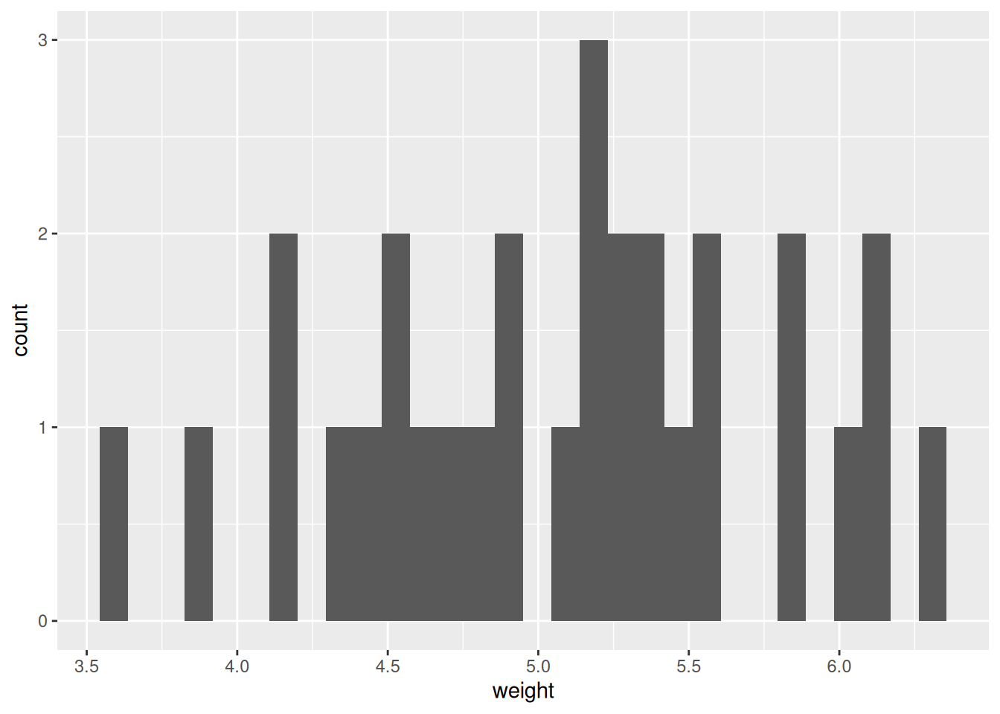
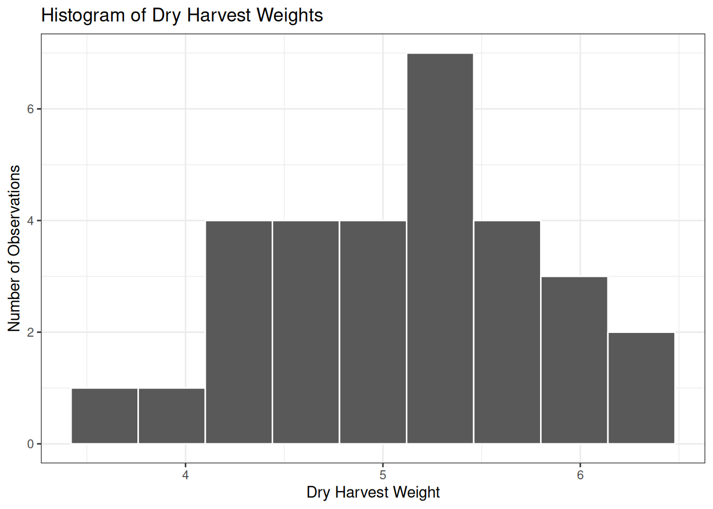
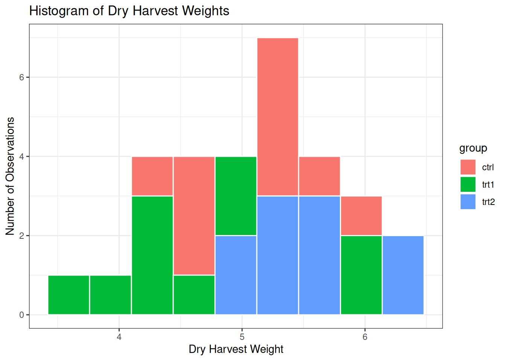
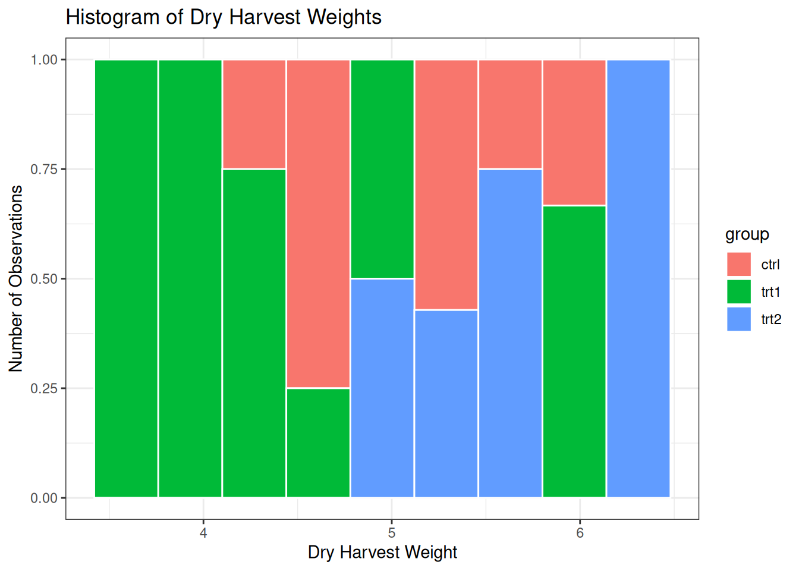

# Download the ggplot2 library
install.packages("ggplot2")Installing package into '/home/bdu/R/x86_64-pc-linux-gnu-library/4.3'
(as 'lib' is unspecified)In this module, we will cover:
How to load and use the ggplot2 visualization library?
How to create and customize visualizations with ggplot2?
How to use a visualization to illustrate a phenomenon?
In this module, you will also learn how to use a specific data type in R: factors.
The R community has developed thousands of libraries that greatly extend the capabilities of the R language (and avoid reinventing the wheel).
One of the most widely used libraries is ggplot2, which is designed for data visualization. It is particularly popular in scientific publications because it is highly customizable.
# Download the ggplot2 library
install.packages("ggplot2")Installing package into '/home/bdu/R/x86_64-pc-linux-gnu-library/4.3'
(as 'lib' is unspecified)# Load the ggplot2 library
library(ggplot2)Verify that the ggplot2 package has been loaded correctly using the search() command.
# Write your code here:ggplot2 provides many standard visualizations: histograms, scatter plots, boxplots, and more. Visualizations in ggplot2 generally begin with the prefix geom_.
To view the complete list of visualizations available in ggplot2, you can use the apropos() function, which searches for a character string in the R documentation.
# Search for all geom_ visualizations available in ggplot2
apropos("geom_") [1] "geom_abline" "geom_area" "geom_bar"
[4] "geom_bin_2d" "geom_bin2d" "geom_blank"
[7] "geom_boxplot" "geom_col" "geom_contour"
[10] "geom_contour_filled" "geom_count" "geom_crossbar"
[13] "geom_curve" "geom_density" "geom_density_2d"
[16] "geom_density_2d_filled" "geom_density2d" "geom_density2d_filled"
[19] "geom_dotplot" "geom_errorbar" "geom_errorbarh"
[22] "geom_freqpoly" "geom_function" "geom_hex"
[25] "geom_histogram" "geom_hline" "geom_jitter"
[28] "geom_label" "geom_line" "geom_linerange"
[31] "geom_map" "geom_path" "geom_point"
[34] "geom_pointrange" "geom_polygon" "geom_qq"
[37] "geom_qq_line" "geom_quantile" "geom_raster"
[40] "geom_rect" "geom_ribbon" "geom_rug"
[43] "geom_segment" "geom_sf" "geom_sf_label"
[46] "geom_sf_text" "geom_smooth" "geom_spoke"
[49] "geom_step" "geom_text" "geom_tile"
[52] "geom_violin" "geom_vline" "get_geom_defaults"
[55] "reset_geom_defaults" "update_geom_defaults" You can then request additional information about a visualization using the R help system:
# Open the help page for ggplot2 bar charts
help(geom_bar)
# Alternatively
?geom_barFind the ggplot function used to create a scatter plot (a set of points defined by their x and y coordinates). Display its help page.
# Write your code here:We will now build our first visualizations with ggplot2.
For this purpose, we will use the PlantGrowth dataset. This dataset is designed to study the effect of a treatment (not disclosed) on plant growth. The total harvest weight is measured depending on whether Treatment 1, Treatment 2, or no treatment was applied.
# Display the first rows of the PlantGrowth dataset
head(PlantGrowth, n = 20) weight group
1 4.17 ctrl
2 5.58 ctrl
3 5.18 ctrl
4 6.11 ctrl
5 4.50 ctrl
6 4.61 ctrl
7 5.17 ctrl
8 4.53 ctrl
9 5.33 ctrl
10 5.14 ctrl
11 4.81 trt1
12 4.17 trt1
13 4.41 trt1
14 3.59 trt1
15 5.87 trt1
16 3.83 trt1
17 6.03 trt1
18 4.89 trt1
19 4.32 trt1
20 4.69 trt1In R, data are typed. Three common types are:
Real numbers: double or dbl
Character strings: character or chr
Factors: factor or fctr
For example, "Four" is considered a character string rather than a number.
In R, a factor is a grouping variable, meaning a variable that splits a dataset into several distinct groups, with each observation belonging to one specific group. Factors will be particularly useful later when we use the group_by() function.
For example, in the PlantGrowth dataset, the variable group is a factor.
# Check whether a variable is a factor
is.factor(PlantGrowth$group)[1] TRUEIt is often useful to know all possible values of a factor. In statistical terms, this corresponds to listing all the levels of the variable. When the variable is a factor, use the levels() function.
# Display all possible values of the group variable
levels(PlantGrowth$group)[1] "ctrl" "trt1" "trt2"The group variable in the PlantGrowth dataset contains three levels:
ctrl: the control group, without treatment
trt1: the group that received Treatment 1
trt2: the group that received Treatment 2
Using the iris dataset, identify which variable is a factor and list its levels.
# Write your code here:We will first focus on the weight variable in the PlantGrowth dataset. A histogram allows us to see how harvest weights are distributed. In statistics, this is referred to as the distribution of values of a variable.
The ggplot2 library provides histograms through the geom_histogram() function. ggplot works through layers that are progressively added using the + symbol.
# Histogram of the weight variable from the PlantGrowth dataset
ggplot(PlantGrowth) +
geom_histogram(aes(weight))
The graph can then be customized by adding additional layers.
# Customized histogram of the weight variable
ggplot(PlantGrowth) +
geom_histogram(aes(weight),
color = "white",
bins = 9) +
theme_bw() +
ggtitle("Histogram of Dry Harvest Weights") +
labs(x = "Dry Harvest Weight",
y = "Number of Observations")
Using the iris dataset, create a histogram of the Petal.Length variable. Customize the theme, title, and labels as you wish.
# Write your code here:Does the chart below allow us to determine whether the treatment influences plant growth?

To better understand this question, we will use a specific ggplot feature: aesthetics, controlled through the aes() function.
Aesthetics can be declared globally at the beginning of the plot or within a specific layer. Be careful: a new declaration overrides the previous one.
The aesthetic function allows you to link graphical properties to variables in your dataset. In other words, the graphical property varies according to the values it represents.
Fill color is often used to represent different groups, or more specifically in R, a factor. In ggplot, the corresponding aesthetic is called fill.
We can therefore associate fill colors with a factor. Here we use the group factor corresponding to the treatment received by the plant.
# Using the fill aesthetic to represent the treatment factor
ggplot(PlantGrowth) +
geom_histogram(aes(x = weight, fill = group),
color = "white",
bins = 9) +
theme_bw() +
ggtitle("Histogram of Dry Harvest Weights") +
labs(x = "Dry Harvest Weight",
y = "Number of Observations")
Question: Can you detect an effect of the treatment on plant growth?
Depending on what you want to highlight, you may need to adjust secondary parameters. These parameters are described in the function documentation, although it is sometimes easier to search for examples online.
Here we will focus on the relative position of histogram bars. This is controlled by the position parameter, whose default value is "stack".
# Adjusting bar positions to improve readability
ggplot(PlantGrowth) +
geom_histogram(aes(x = weight, fill = group),
color = "white",
bins = 9,
position = "fill") +
theme_bw() +
ggtitle("Histogram of Dry Harvest Weights") +
labs(x = "Dry Harvest Weight",
y = "Number of Observations")
Using the documentation and/or the internet, find the four possible values of the position parameter. Select the one you consider most appropriate for illustrating the effect of treatment on plant growth.
# Modify the code below:
ggplot(PlantGrowth) +
geom_histogram(aes(x = weight, fill = group),
color = "white",
bins = 9,
position = "stack") +
theme_bw() +
ggtitle("Histogram of Dry Harvest Weights") +
labs(x = "Dry Harvest Weight",
y = "Number of Observations")
In this module, we learned how to use the ggplot2 graphics library to create visualizations in R.
We discovered the concept of factors.
We understood the layered programming approach used by ggplot.
We learned how to customize a chart to make it more attractive.
We learned how to link graphical parameters to data in order to better illustrate a phenomenon.